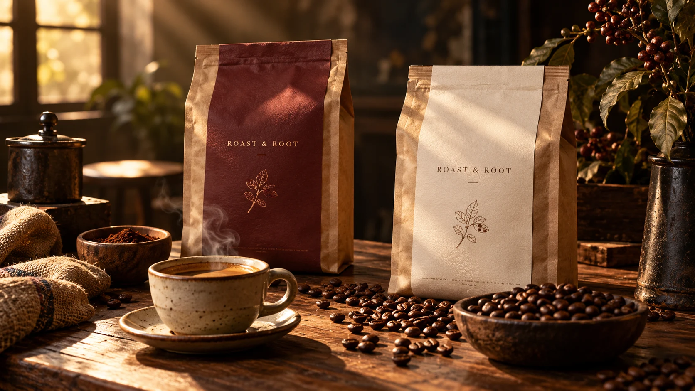

Your morning, organised
A good starting point is a brewer you understand, coffee prepared to suit it and a cup you enjoy using. Keep the setup simple and review the equipment’s instructions before brewing.
Read the notes ↗A good starting point is a brewer you understand, coffee prepared to suit it and a cup you enjoy using. Keep the setup simple and review the equipment’s instructions before brewing.
Read the notes ↗Whole-bean and ground coffee fit different home setups. Think about the equipment you own, how you store coffee and the quantity you realistically use before choosing a pack.
Read the notes ↗A cup is part of how a coffee moment feels. Compare capacity, material, shape and care requirements rather than choosing on photography alone.
Read the notes ↗
A good starting point is a brewer you understand, coffee prepared to suit it and a cup you enjoy using. Keep the setup simple and review the equipment’s instructions before brewing.
Whole-bean and ground coffee fit different home setups. Think about the equipment you own, how you store coffee and the quantity you realistically use before choosing a pack.
A cup is part of how a coffee moment feels. Compare capacity, material, shape and care requirements rather than choosing on photography alone.
Original editorial notes for this showcase. Product-specific information must be verified with the live supplier.